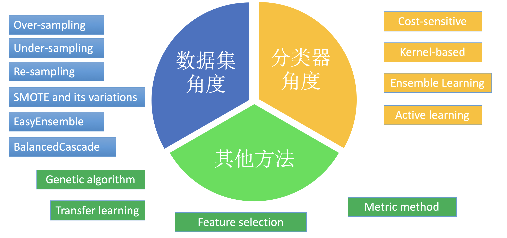

联系我
- mail:bearing512@foxmail.com
- wechat:zc_zoro
 沪公网安备 31012002005714号 沪ICP备2023007215号-1
沪公网安备 31012002005714号 沪ICP备2023007215号-1
Copyright © 2023 ibearing.top. All rights reserved.
数据非均衡问题指的是在数据集中的某一类或是某些类的数量远小于其他类别，而这些少数类对于具有重要的研究意义。非均衡学习在分类，回归分析，数据挖掘等均多个研究领域均有体现，研究者大多以分类任务为着手点对非均衡学习进行研究并将方法扩展到其他领域。
非均衡学习始于上个世纪60年代后期，研究人员从非均衡的数据集中学习到知识是相对的困难，大多数的机器学习算法都假设或者希望数据集样本是相对均衡的或者误分类的代价是相等。2000年前后，科研技术难关逐渐被攻克，包括评价指标、数据预处理、核函数偏移、集成学习等方法。自2015年以来，生成对抗网络等深度生成模型在拟合复杂分布上展现出优秀的能力，基于深度学习方法拟合数据分布，进行数据增强以及过采样的方法逐渐得到广泛的应用，尤其是在生物医学领域，软件安全检测，诈骗检测等领域。

基于学习器的角度方法主要从提高错分代价、提高在训练集上精度为目标，引入代价敏感函数(Cost-sensitive)，核函数偏移(Support Vector Machine, SVM)，集成学习(Ensemble Learning)提高算法的性能。基于应用领域适应的优化的算法，大多结合应用领域的特性，结合数据特征特性，数据属性，将多种优化算法加以融合，遗传算法，小波变化，模拟退火，小样本学习，半监督学习方法等多种方法被引入到非均衡学习当中。值得注意的是，近年来迁移学习在非均衡学习的引入正成为新的研究趋势，在生物技术、医学图像领域应用尤其突出。
基于数据角度方法的非均衡学习方法主要从特征选择、采样方法、评价指标等角度展开。当数据集呈现出非均衡性，尤其是特征维度较大的非均衡问题，在样本空间会存在大量的噪声。
采样方法主要分为随机采样(random-sampling)，欠采样(under-sampling)，过采样(over-sampling)，混合采样。对于多数类进行欠采样，对于少数类进行过采样，以及将两者结合的方法混合采样的策略是最常用的方法。以及常用的smote算法能有效的减少过拟合的程度。
在基于学习器角度，研究主要从代价敏感分析，核函数偏移，集成学习等角度展开。对于非均衡数据集而言，学习器对于多数类的错分代价较小而对于少数类的错分代价是巨大。代价敏感学习方法就是将各类不同的错分代价赋予不同的权重，通过代价矩阵运用到分类决策中去，目的就是尽可能地降低误分类的总体代价，使得分类器学习到少数类的特征
沪公网安备 31012002005714号 沪ICP备2023007215号-1
Copyright © 2023 ibearing.top. All rights reserved.